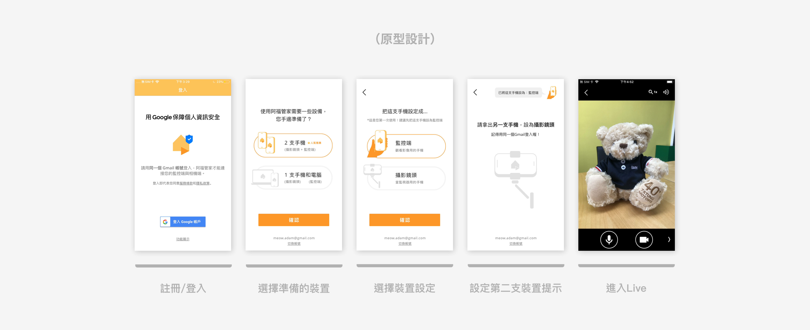
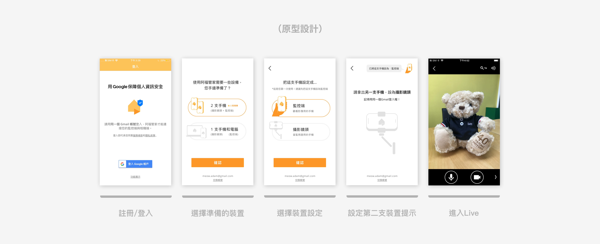
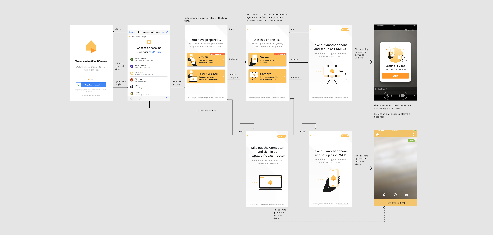

BACKGROUND & GOAL
This was a self-initiated exercise to explore how AI tools can speed up the early stages of prototyping.The objective was to create a small, interactive prototype within a short timeframe, using AI to help with both content creation and code generation.
PROCESS
Requirement Definition
• Outlined the product goal, specifications, interaction flow, and visual style with AI.
Content & Interaction Design
• AI generated quiz questions and result display logic.
• Iteratively refined the script and interaction flow to improve clarity and engagement.
Prototype Development & Testing
• Requested HTML/CSS/JavaScript from AI.
• Tested and previewed in CodePen, making adjustments to interaction behavior and visual styling.
Final Delivery
• Published the working, interactive quiz on CodePen for sharing and feedback.


OUTCOME
• A functional, browser-based Social Attitude Quiz prototype.
• Demonstrated the ability to integrate AI into the design workflow to rapidly move from concept to an interactive deliverable.
 

RESEARCH RESULTS
After testing our prototype and allowing participants to try our original onboarding process, all participants successfully completed the onboarding with our new prototype. However, most encountered difficulties with the original version. While the new flow appears feasible, there are areas for improvement in our design.
Emphasizing Recommended Options
Prototype testing revealed that prompting participants to select prepared devices for Alfred setup helped clarify requirements. However, some participants hesitated in choosing the option. To address this, we should not only set one of the recommended options as default but also emphasize the recommended option further.
Improving Clarity of Instructions
Although all participants completed the setup process as expected, some expressed uncertainty about the instructions. We believe we should enhance the clarity of instructions, making them as simple and straightforward as possible.
UI/UX Design
In light of the research results indicating the user-friendliness of the new version compared to the original, the final design follows suit with the new iteration. Additionally, in response to the research findings, we have refined the design of the recommended options and adjusted the instructional content accordingly.
